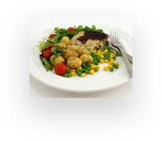
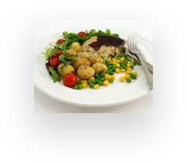

STEAK SHOP OFFERS BEST STEAK IN TOWN
Steak Shop offers best steak in town
inappropriate behavior is often laughed off as “boys will be boys,” women face higher conduct standards especially in the workplace. That's why it's crucial that, as women.

About Steak
Tradition Since 1889
Although people have eaten beef since prehistoric times, many people consider steak as we know it today to have originated in Florence, Italy. On August 10, 258 AD, St.
Around the same time frame, the Italians were also enjoying steaks. Many historians have hypothesized that Italy is actually where the modern notion of cooking steaks originated. The origin story allegedly begins in Florence, which is arguably the location that birthed the Renaissance.
The cuts come from different parts of a cow. For example, chuck and brisket come from the front section and round cuts come from the rear. In general, most people prefer meat from the middle section, which includes rib roasts, sirloins, and tenderloins.

 

Our daily chef
Gordon ramsay Tips:
Season: Sprinkle each side of the steak generously with salt and pepper, then immediately place in the skillet. Sear Side 1: Cook for 2 - 2.5 minutes until you get a great crust, then turn. Garlic Butter: Leave for 1 minute, then push steaks to one side and toss in butter, garlic and thyme.